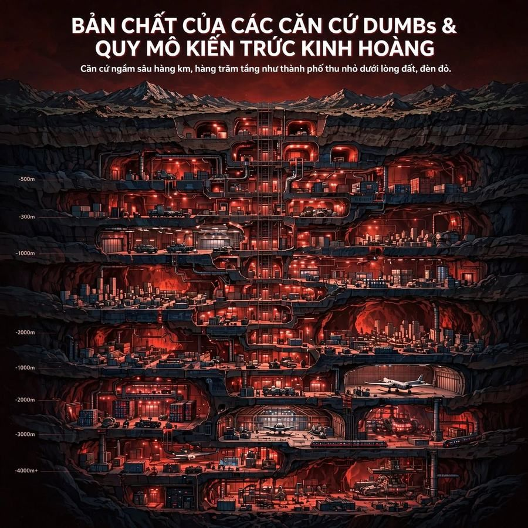
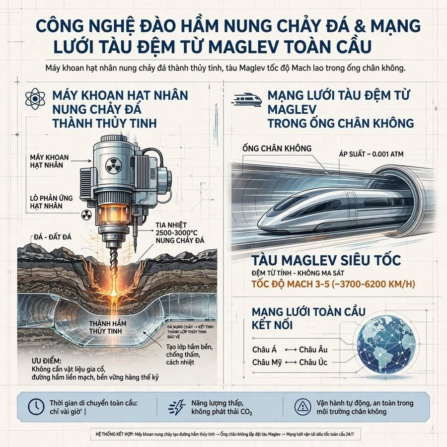
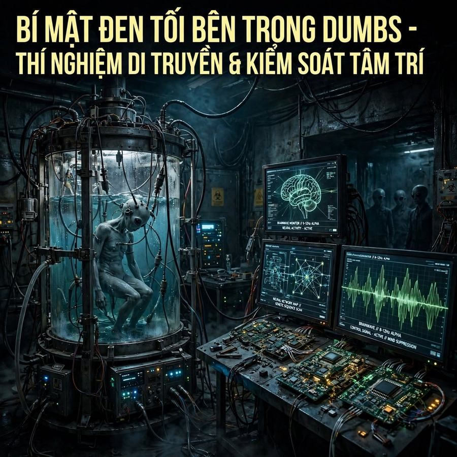
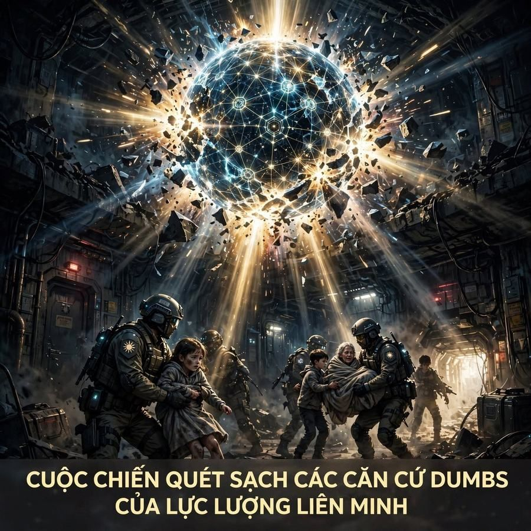

Trang chủ / Chuyên đề 4: Văn Minh Lòng Đất / Kỳ 34
Chuyên đề 4 · Kỳ 34 / 100
MẠNG LƯỚI CĂN CỨ QUÂN SỰ NGẦM SÂU (DUMBs) & CUỘC CHIẾN BÓNG TỐI DƯỚI LÒNG ĐẤT

Ở Kỳ 3, chúng ta đã cùng nhau tìm hiểu về lịch sử các cuộc đụng độ cổ đại giữa chủng tộc Bò sát bản địa và các lực lượng can thiệp từ ngoài vũ trụ, cùng sự phân biệt rõ ràng giữa cư dân bản địa hòa bình và các đế chế xâm lược tiêu cực.
Tuy nhiên, bức tranh thế giới ngầm trong thế kỷ 20 và 21 lại xuất hiện một chương hoàn toàn mới, u tối và phức tạp hơn rất nhiều. Đó chính là sự hình thành của Mạng lưới Căn cứ Quân sự Ngầm sâu (Deep Underground Military Bases — DUMBs) — nơi các lực lượng kiểm soát bóng tối phối hợp với giới tinh hoa bề mặt để xây dựng một cơ sở hạ tầng ngầm song song hoàn toàn tách biệt khỏi xã hội loài người.
Các căn cứ DUMBs là gì và được xây dựng ở độ sâu khủng khiếp ra sao? Công nghệ máy khoan nung chảy đá thủy tinh hóa và hệ thống tàu đệm từ siêu tốc Maglev kết nối các căn cứ toàn cầu vận hành như thế nào? Những chương trình thí nghiệm di truyền, nhân bản và kiểm soát tâm trí nào đã diễn ra trong bóng tối? Và cuộc chiến quét sạch các căn cứ DUMBs của Lực lượng Liên minh Trái Đất phối hợp với Liên Đoàn Thiên Hà đang diễn ra rực rỡ ra sao?
Hãy cùng dấn thân vào Kỳ 4: Mạng Lưới Căn Cứ Quân Sự Ngầm Sâu (DUMBs) & Cuộc Chiến Bóng Tối Dưới Lòng Đất để vạch trần bộ mặt của ma trận ngầm!
✦ ✦ ✦1. BẢN CHẤT CỦA CÁC CĂN CỨ DUMBs & QUY MÔ KIẾN TRÚC KINH HOÀNG
Khác với các thành phố ngầm tự nhiên hay các đô thị hòa bình của Agartha, các căn cứ DUMBs là những công trình quân sự - công nghệ nhân tạo được đào sâu vào lòng đất từ giữa thế kỷ 20.
A. Độ Sâu Kỷ Lực & Cấu Trúc Đa Tầng
- Nằm Sâu Hàng Kilômét Dưới Lòng Đất: Các căn cứ DUMBs được xây dựng ở độ sâu từ vài trăm mét đến hơn 10 kilômét (tương đương 33.000 feet) dưới bề mặt Trái Đất.
- Quy Mô Như Những Thành Phố Thu Nhỏ: Mỗi căn cứ DUMBs có thể bao gồm từ vài chục đến hàng trăm tầng ngầm (như các đại phức hợp tại Dulce, Denver, Area 51, Pine Gap). Nơi đây tích hợp đầy đủ hệ thống cung cấp năng lượng tự động, hồ nước ngầm, nông trang sinh học nhân tạo và trung tâm nghiên cứu công nghệ cao.
B. Nguồn Vốn Đen (Black Budget) & Ngân Sách Bí Mật
- Hàng Ngàn Tỷ Đô La Chi Phí Xây Dựng: Chi phí xây dựng mỗi căn cứ DUMBs ước tính từ 17 đến hơn 26 tỷ đô la. Nguồn tiền này được huy động hoàn toàn từ các quỹ dự án đen không qua phê chuẩn của quốc hội, nguồn thu từ buôn bán ma túy, tài chính ngầm và các hoạt động thao túng kinh tế toàn cầu.

2. CÔNG NGHỆ ĐÀO HẦM NUNG CHẢY ĐÁ & MẠNG LƯỚI TÀU ĐỆM TỪ MAGLEV TOÀN CẦU
Để kết nối hàng trăm căn cứ DUMBs rải rác khắp các châu lục, một hệ thống đường hầm siêu hiện đại đã được thiết lập.
A. Máy Khoan Nung Chảy Đá Thủy Tinh Hóa (Nuclear Tunnel Boring Machines)
- Khoan Đất Bằng Tia Nhiệt Siêu Cao Tần: Thay vì dùng mũi khoan cơ học chậm chạp, các lực lượng ngầm sử dụng máy khoan nạp năng lượng nguyên tử. Thiết bị này nung chảy đá cứng ngay tại chỗ, biến vách đường hầm thành một lớp thủy tinh láng mịn, siêu bền vững mà không cần khung đỡ.
- Tốc Độ Thi Công Thần Tốc: Công nghệ này cho phép đào hàng kilômét đường hầm mỗi ngày, kiến tạo nên mạng lưới giao thông ngầm chằng chịt bao phủ toàn bộ lục địa Bắc Mỹ, Châu Âu, Châu Á và Nam Cực.
B. Mạng Lưới Tàu Đệm Từ Maglev Tốc Độ Mach
- Di Chuyển Siêu Tốc Trong Ống Chân Không: Các đường hầm ngầm vận hành hệ thống tàu điện từ Maglev trôi nổi trên từ trường. Trong môi trường áp suất chân không, các đoàn tàu này có thể đạt vận tốc vượt quá Mach 2 (hơn 2.400 km/h), cho phép di chuyển từ bờ Đông sang bờ Tây nước Mỹ chỉ trong vòng chưa đầy 30 phút!

3. BÍ MẬT ĐEN TỐI BÊN TRONG DUMBs: THÍ NGHIỆM DI TRUYỀN & KIỂM SOÁT TÂM TRÍ
Phần lớn các căn cứ DUMBs không phục vụ mục đích phòng thủ quốc gia thuần túy, mà bị các lực lượng tiêu cực biến thành nơi thực hiện những chương trình đen tối nhất.
A. Thỏa Thuận Ngầm Đổi Công Nghệ Lấy Nguồn Lực
- Sự Can Thiệp Của Phe Bò Sát & Người Xám Tiêu Cực: Tại các tầng sâu nhất của căn cứ Dulce (New Mexico) hay Area 51 (Nevada), các lực lượng kiểm soát bề mặt đã ký kết thỏa thuận ngầm với các chủng tộc ngoài hành tinh tiêu cực.
- Giao Dịch Công Nghệ: Giới tinh hoa nhận được công nghệ kháng hấp dẫn, năng lượng vô hướng, vũ khí laser và vi mạch bán dẫn; đổi lại, họ cho phép các thực thể tiêu cực xây dựng phòng thí nghiệm ngầm, tiến hành bắt cóc và thí nghiệm di truyền trên con người.
B. Các Chương Trình Nhân Bản & Thao Túng Tâm Trí
- Nhân Bản Sinh Học (Do-Hu Clones): Các cơ sở ngầm tiến hành tạo ra các cơ thể nhân bản sinh học (Clones) và dạng sống nhân tạo để làm lực lượng lao động nô dịch cho các chương trình không gian bí mật.
- Thao Túng Tâm Trí Nâng Cao (Mind Control): Nơi đây thử nghiệm các công nghệ kiểm soát sóng não, cấy ghép vi mạch vi mô, công nghệ phát sóng hạ tần và khai thác các nguồn năng lượng sợ hãi (Loosh) từ các nạn nhân bị bắt giam.

4. CUỘC CHIẾN QUÉT SẠCH CÁC CĂN CỨ DUMBs CỦA LỰC LƯỢNG LIÊN MINH
Thực tại u tối bên trong các căn cứ DUMBs không thể kéo dài mãi khi dải tần số Trái Đất nâng cao và lực lượng Ánh Sáng phát động chiến dịch tổng tấn công.
A. Chiến Dịch Quân Sự Ngầm Quy Mô Toàn Cầu
- Sự Phối Hợp Giữa Liên Minh Trái Đất & Liên Đoàn Thiên Hà: Trong những năm gần đây, các lực lượng đặc nhiệm thuộc Liên minh Trái Đất phối hợp với Liên Đoàn Thế Giới Thiên Hà (GFW) đã tiến hành các chiến dịch quân sự giải phóng các căn cứ DUMBs trên toàn cầu.
- Tấn Công Bằng Công Nghệ Tần Số Tối Cao: Các trận chiến diễn ra khốc liệt dưới lòng đất. Lực lượng Ánh Sáng sử dụng các loại vũ khí tần số vô hướng để làm tê liệt hệ thống phòng thủ từ trường của đối phương, phá hủy các phòng thí nghiệm tiêu cực và xé rách ma trận kiểm soát.
B. Giải Cứu Nạn Nhân & Phá Hủy Cấu Trúc Nô Dịch
- Hàng Ngàn Nạn Nhân Đã Được Giải Cứu: Hàng ngàn nạn nhân và trẻ em bị giam giữ dưới các căn cứ DUMBs (như Dulce, Nam Cực, Châu Âu) đã được lực lượng Liên minh giải cứu, đưa về các tàu y tế thiên hà để điều trị tâm lý và khôi phục thể xác bằng công nghệ Med Beds.
- Nổ Tung Các Điểm Nút Ma Trận: Nhiều vụ động đất có độ sâu bất thường (độ sâu chính xác 10km) được ghi nhận trên khắp thế giới trong thời gian qua thực chất là kết quả của việc đánh nổ và đóng vĩnh viễn các căn cứ DUMBs tiêu cực!

5. LỜI KẾT KỲ 4: TỰ DO CHO BỀ MẶT VÀ LÒNG ĐẤT GAIA
Kỳ 4 của chuyên đề 4 khép lại khi bức màn u tối về các căn cứ DUMBs được xé rách:
- Bóng Tối Đang Phải Rút Vào Lịch Sử: Ma trận ngầm được xây dựng bằng tiền bẩn, sự sợ hãi và sự nô dịch đã bị đánh sụp hoàn toàn. Các cấu trúc thao túng Trái Đất không còn nơi lẩn nấp!
- Hướng Tới Sự Thức Tỉnh Toàn Diện: Việc vạch trần sự thật về các căn cứ DUMBs không phải để gieo rắc sự sợ hãi, mà để giúp bạn nhận diện bức tranh toàn cảnh về cuộc chiến tâm linh, từ đó kiên định giữ vững dải tần số bình thản, từ bi và yêu thương!